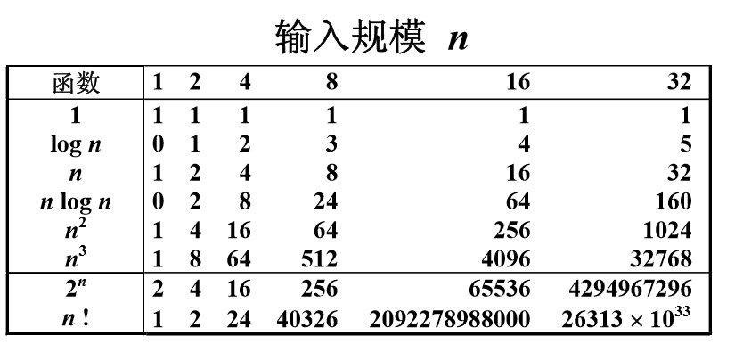

寒假学习系列...
说算法之前先了解 ADT
抽象数据类型（Abstract Data Type）
数据类型
数据对象集 数据集合相关联的操作集
抽象：描述数据类型的方法不依赖于具体实现
与存放数据的机器无关
与数据存储的物理结构无关
与实现操作的算法和编程语言均无关
只描述数据对象集和相关操作集“是什么”，并不涉及 “如何做到”的问题。
什么是算法
算法（Algorithm）
1.一个有限指令集
2.接受一些输入（有些情况下不需要输入）
3.产生输出，一定在有限步骤之后终止
4.每一条指令必须：有充分明确的目标，不可以有歧义 ，计算机能处理的范围之内，描述应不依赖于任何一种计算机语言以及具体的实现手段。
（有穷性，确定性，可行性，输入，输出）
什么是好算法
空间复杂度S(n)——根据算法写成的程序在执行时 占用存储单元的长度。这个长度往往与输入数据的规模有关。空间复杂度过高的算法可能导致使用的 内存超限，造成程序非正常中断。
时间复杂度T(n)——根据算法写成的程序在执行时 耗费时间的长度。这个长度往往也与输入数据的规模有关。时间复杂度过高的低效算法可能导致我们在有生之年都等不到运行结果。
在分析一般算法的效率时，我们经常关注下面两种复杂度
最坏情况复杂度Tworst( n )
平均复杂度Tavg( n )
Tavg( n ) <= Tworst( n )
复杂度的渐进表示
T(n) = O(f(n))表示存在常数C >0, n0>0 使得当 n>=n0时有T(n)<=C·f(n)
T(n) = Ω(g(n))表示存在常数C >0, n0>0 使得当 n>=n0时有T(n)>=C·g(n)
T(n) = Θ(h(n))表示同时有T(n) = O(h(n))和 T(n) = Ω(h(n))

复杂度分析小窍门
1.若两段算法分别有复杂度T1(n) = O(f1(n))和T2(n) = O(f2(n))，则
T1(n) + T2(n) = max( O(f1(n)), O(f2(n)) )
T1(n) x T2(n) = O( f1(n) x f2(n) )
2.若T(n)是关于n的k阶多项式，那么T(n)=Θ(nk)
3.一个for循环的时间复杂度等于循环次数乘以循环体代码的复杂度
4.if-else结构的复杂度取决于if的条件判断复杂度和两个分枝部分的复杂度，总体复杂度取三者中最大
补充
算法设计的要求：正确性，可读性，健壮性，效率和地存储量需求。